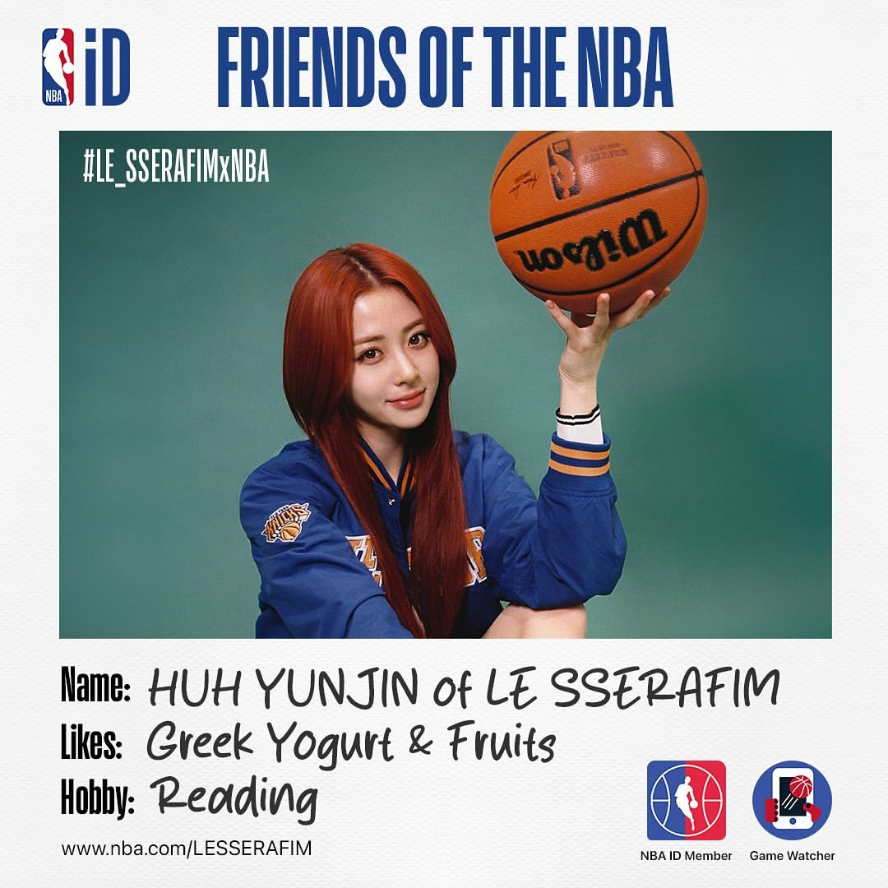
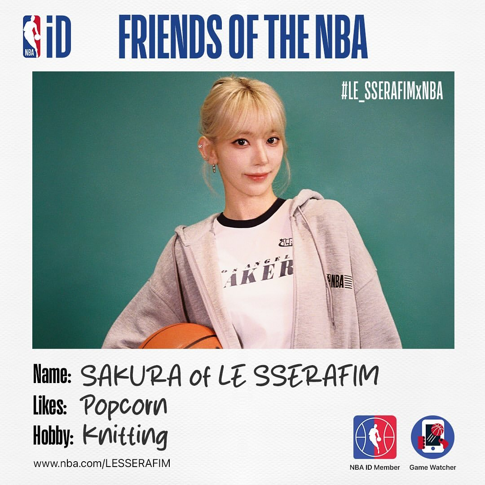

Detail Member
chaewon
Kim Chae-won (lahir 1 Agustus 2000) adalah seorang penyanyi asal Korea Selatan. Ia adalah pemimpin dari grup idola wanita Le Sserafim.

Heo Yun-jin
Heo Yun-jin atau Jennifer Huh adalah penyanyi Korea-Amerika. Ia adalah anggota dari grup wanita Le Sserafim.

Sakura Miyawaki
Sakura Miyawaki adalah seorang penyanyi dan aktris asal Jepang. Ia adalah anggota dari grup idola Korea Selatan Le Sserafim,

Hong Eun-chae
Hong Eun-chae (lahir 10 November 2006) adalah seorang penyanyi Korea Selatan kelahiran Miryang. Ia tergabung dalam grup vokal perempuan Le Sserafim.

Kazuha Nakamura
Kazuha Nakamura (lahir 9 Agustus 2003) adalah seorang penyanyi, rapper, dan penari asal Jepang. Ia adalah anggota grup vokal perempuan Le Sserafim.